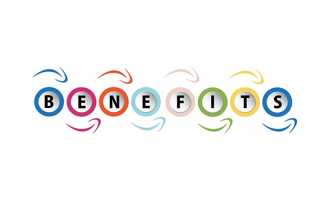

CARACTERISTICAS
- Combinación de un cliente que interactúa con el usuario, y un servidor que interactúa con los recursos a compartir. El proceso del cliente proporciona la interfaz entre el usuario y el resto del sistema. El proceso del servidor actúa como un motor de software que maneja recursos compartidos tales como bases de datos, impresoras, Módem, etc.
- Las tareas del cliente y del servidor tienen diferentes requerimientos en cuanto a recursos de cómputo como velocidad del procesador, memoria, velocidad y capacidades del disco e input-output devices.
- Se establece una relación entre procesos distintos, los cuales pueden ser ejecutados en la misma máquina o en máquinas diferentes distribuidas a lo largo de la red.
- Existe una clara distinción de funciones basadas en el concepto de”servicio”, que se establece entre clientes y servidores.
- La relación establecida puede ser de muchos a uno, en la que un servidor puede dar servicio a muchos clientes, regulando su acceso a los recursos compartidos.
- Los clientes corresponden a procesos activos en cuanto a que son estos los que hacen peticiones de servicios. Estos últimos tienen un carácter pasivo, ya que esperan peticiones de los clientes.
- No existe otra relación entre clientes y servidores que no sea la que se establece a través del intercambio de mensajes entre ambos. El mensaje es el mecanismo para la petición y entrega de solicitudes de servicios
- El ambiente es heterogéneo. La plataforma de hardware y el sistema operativo del cliente y del servidor no son siempre los mismos. Precisamente una de las principales ventajas de esta arquitectura es la posibilidad de conectar clientes y servidores independientemente de sus plataformas.
El concepto de escalabilidad tanto horizontal como vertical es aplicable a cualquier sistema Cliente-Servidor. La escalabilidad horizontal permite agregar más estaciones de trabajo activas sin afectar significativamente el rendimiento. La escalabilidad vertical permite mejorar las características del servidor o agregar múltiples servidores.VEntajas
 Existencia de plataformas de hardware cada vez más baratas. Esta constituye a su vez una de las más palpables ventajas de este esquema, la posibilidad de utilizar máquinas mucho más baratas que las requeridas por una solución centralizada, basada en sistemas grandes (mainframes). Además, se pueden utilizar componentes, tanto de hardware como de software, de varios fabricantes, lo cual contribuye considerablemente a la reducción de costos y favorece la flexibilidad en la implantación y actualización de soluciones. Facilita la integración entre sistemas diferentes y comparte información, permitiendo por ejemplo que las máquinas ya existentes puedan ser utilizadas pero utilizando interfaces más amigables el usuario. De esta manera, se puede integrar PCs con sistemas medianos y grandes, sin necesidad de que todos tengan que utilizar el mismo sistema operativo. Al favorecer el uso de interfaces gráficas interactivas, los sistemas construidos bajo este esquema tienen una mayor y más intuitiva con el usuario. En el uso de interfaces gráficas para el usuario, presenta la ventaja, con respecto a uno centralizado, de que no siempre es necesario transmitir información gráfica por la red pues esta puede residir en el cliente, lo cual permite aprovechar mejor el ancho de banda de la red. La estructura inherentemente modular facilita además la integración de nuevas tecnologías y el crecimiento de la infraestructura computacional, favoreciendo así la escalabilidad de las soluciones. Contribuye además a proporcionar a los diferentes departamentos de una organización, soluciones locales, pero permitiendo la integración de la información.
Desventajas
 El mantenimiento de los sistemas es más difícil pues implica la interacción de diferentes partes de hardware y de software, distribuidas por distintos proveedores, lo cual dificulta el diagnóstico de fallas.
Cuenta con muy escasas herramientas para la administración y ajuste del desempeño de los sistemas.
Es importante que los clientes y los servidores utilicen el mismo mecanismo (por ejemplo sockets o RPC), lo cual implica que se deben tener mecanismos generales que existan en diferentes plataformas.
Hay que tener estrategias para el manejo de errores y para mantener la consistencia de los datos.
El desempeño (performance), problemas de este estilo pueden presentarse por congestión en la red, dificultad de tráfico de datos, etc.
El mantenimiento de los sistemas es más difícil pues implica la interacción de diferentes partes de hardware y de software, distribuidas por distintos proveedores, lo cual dificulta el diagnóstico de fallas.
Cuenta con muy escasas herramientas para la administración y ajuste del desempeño de los sistemas.
Es importante que los clientes y los servidores utilicen el mismo mecanismo (por ejemplo sockets o RPC), lo cual implica que se deben tener mecanismos generales que existan en diferentes plataformas.
Hay que tener estrategias para el manejo de errores y para mantener la consistencia de los datos.
El desempeño (performance), problemas de este estilo pueden presentarse por congestión en la red, dificultad de tráfico de datos, etc.